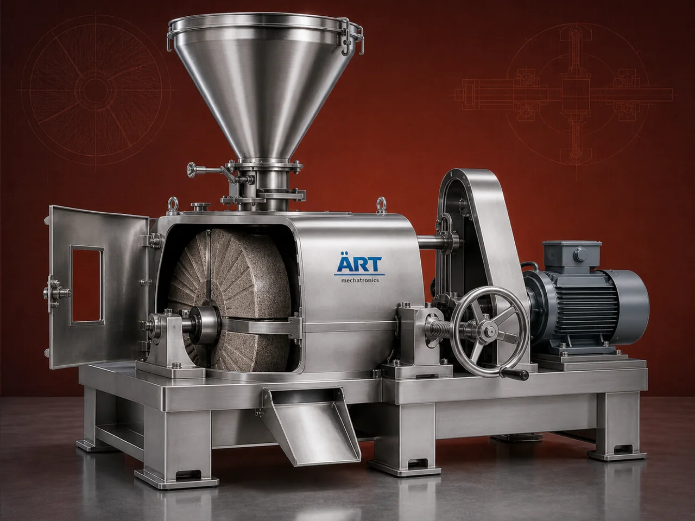

Stone Mill Machine (Atta Chakki & Natural Stone Grinding System for Flour & Food Processing)
A Stone Mill Machine, also known as an Atta Chakki or Stone Grinder, is a traditional yet highly effective grinding system used for natural grinding of grains, spices, and food products using stone grinding wheels.

About the Stone Mill Machine
Unlike modern high-speed grinding machines, stone mills operate at lower speeds, generating minimal heat, which helps preserve the natural taste, aroma, and nutritional value of the product.
Stone mills are widely used in flour mills, organic food processing units, traditional food industries, and small to large-scale atta production plants, where quality and authenticity are important.
ART Mechatronics offers high-performance stone mill machines, combining traditional grinding principles with modern engineering for durability and efficiency.
One machine, many names
Buyers search for this equipment under many terms — we manufacture all of them:
Working Principle of Stone Mill Machine
Grains or raw materials are fed into the machine through:
Inside the machine:
Produces fine flour naturally
Ground material (flour) is discharged through:
Types of Stone Mill Machines
Industries Using Stone Mill
🌾 Flour & Food Industry
- Wheat flour
- Atta production
🍃 Organic Food Industry
- Natural flour
- Health food products
🌶️ Spice Industry
- Spices grinding
🏪 Retail & Commercial Shops
- Fresh flour production
🍞 Bakery Industry
- Whole grain flour
Features & Advantages
- Natural grinding process
- Retains nutrients and flavor
- Low heat generation
- Superior taste and texture
- Simple and reliable operation
- Energy-efficient system
- Suitable for organic food production
Technical Highlights
- Capacity: Small to industrial scale
- Grinding Type: Stone-based friction
- Speed: Low RPM
- Construction: Mild Steel / Stainless Steel
- Stone Type: Natural / Emory stones
- Drive: Electric motor
Turnkey Stone Mill Solutions
ART Mechatronics offers:
- Complete flour mill setup
- Stone mill machine supply
- Cleaning and feeding systems
- Packaging integration
- Installation & commissioning
- After-sales service & AMC
Why Choose Art Mechatronics
- Expertise in traditional and modern grinding systems
- High-quality stone mill design
- Customized solutions for various capacities
- Durable and efficient machines
- Proven performance across applications
Applications
- Flour Mills
- Food Processing Units
- Organic Food Brands
- Retail Flour Shops
- Bakery Units
Related Size Reduction & Grinding machines
Get pricing & specs for the Stone Mill Machine
Share the product, target capacity, current process and plant location. These details help our engineers discuss the right machine or line configuration.
One partner, from design to start-up
ART Mechatronics designs, manufactures, installs and commissions your Stone Mill Machine solution with regional presence in India, UAE and Thailand.